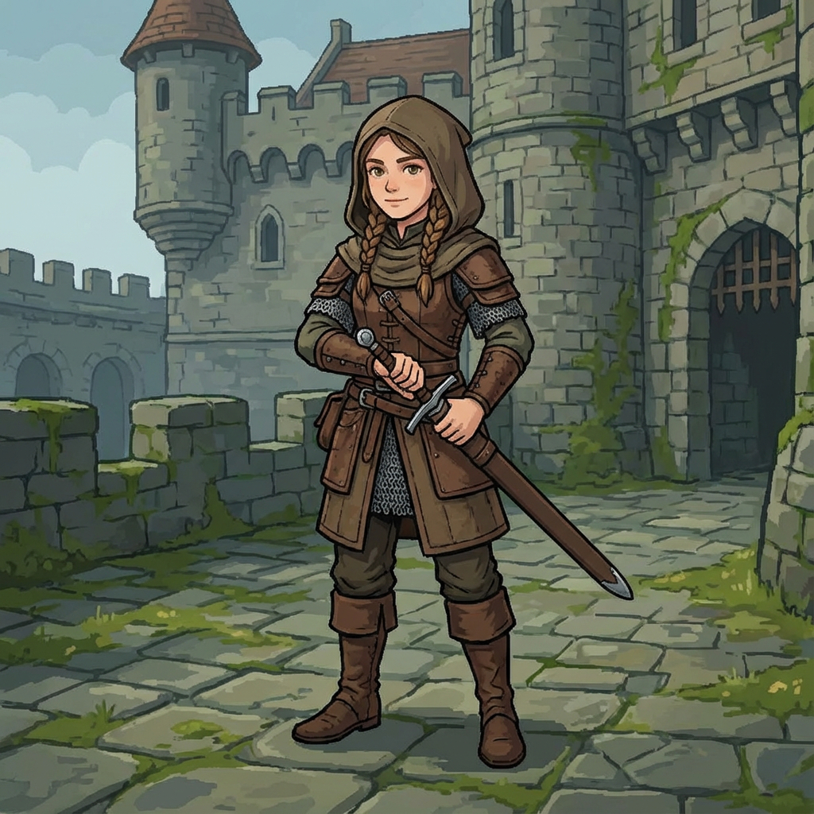
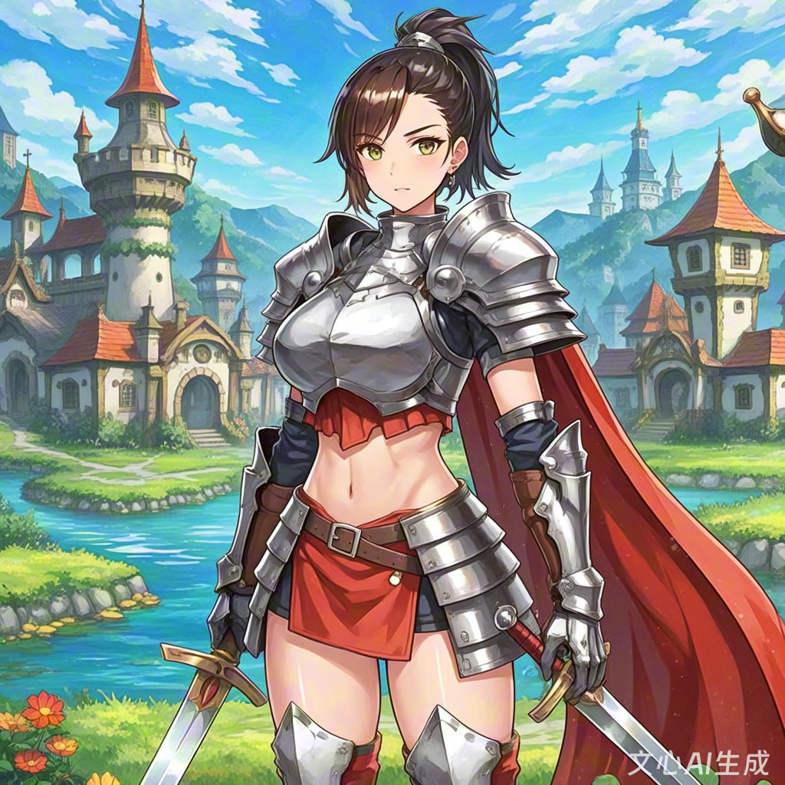
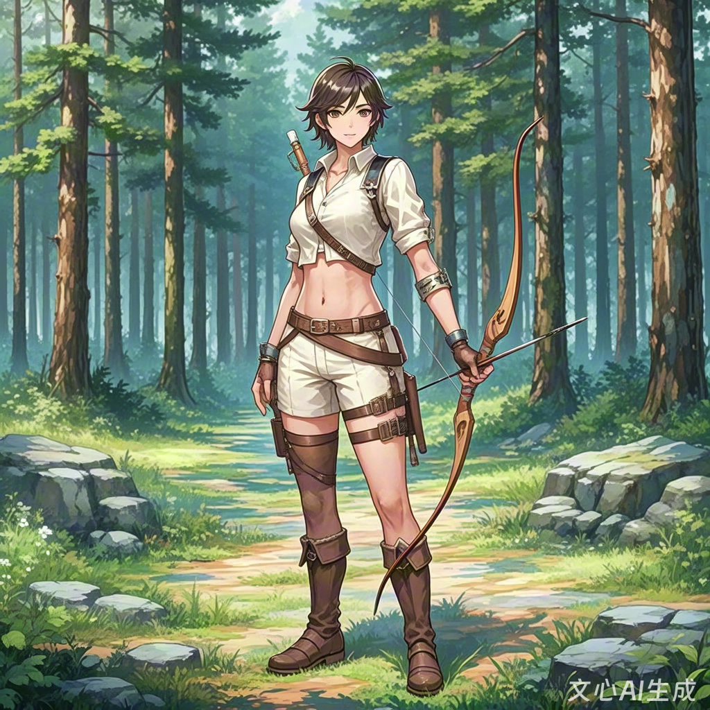
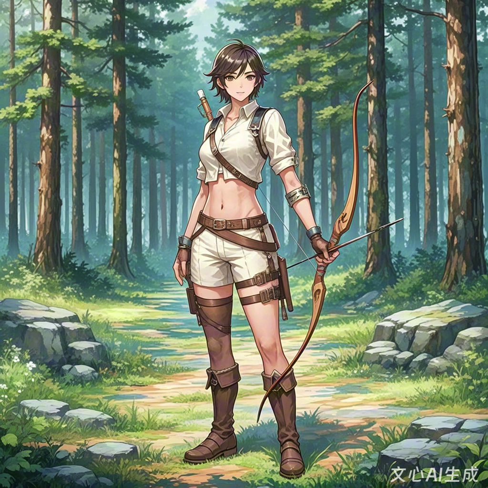

Apprentice Swordswoman


MidjourneyWenxin Yige
This project compares the ‘youthful’ characters generated by Midjourney and Wenxin Yige under identical prompts. Through participant scoring and visual symbol coding, it identifies the aesthetic inclinations and cultural preferences of the platforms.

Prompts follow EN/CN parity with negative constraints (PG / non-sexualized). Metadata (prompt texts, parameters, notes) can be added later as needed.
 

Patterns: Under the same “youth-coded + PG” semantics, platform defaults (style layer, pose templates, color strategy) still shape output. EN-context tools tend to realism/semi-realism and functional gear; CN-context tools often adopt anime/illustration, higher saturation, and icon-like poses.
Implications: For child/adolescent contexts, set conservative defaults (modest clothing, neutral stance) and document negative prompts. Maintain cross-language prompt parity and record parameters (AR/seed/time) for reproducibility.